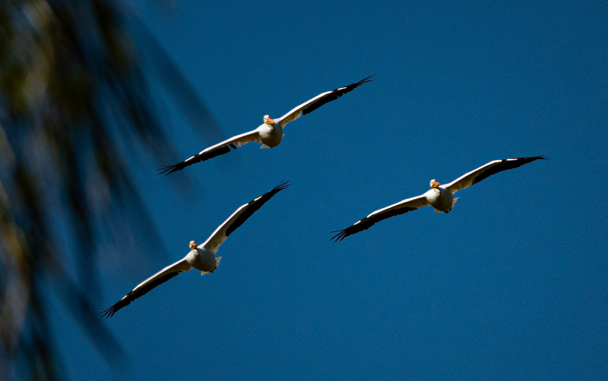

- The American white pelican is one of the largest birds in North America, with a wingspan of up to nine feet — a giant, snow-white bird with black wingtips and a long yellow-orange bill.
- It is a winter visitor to Florida, not a year-round local; the adults breed far to the north and west and come south to escape the cold.
- Unlike the diving brown pelican, the white pelican does not plunge from the air; it floats on the surface and scoops fish up with its bill.
- It often fishes as a team, with groups herding fish into the shallows and dipping their bills together — a striking bit of cooperative hunting.
Bright white overall, with black flight feathers that show mainly in flight.
Long and yellow-orange.
Enormous — among the largest birds on the continent.
Floats and scoops; does not dive.
Mostly silent, especially on the wintering grounds.
A huge white bird with black wingtips, floating in groups on open water or soaring high in slow circles. If a pelican is plunge-diving at the coast, that is the smaller, darker brown pelican; the white pelican scoops from the surface, usually inland.
Mainly fish, scooped from the water at the surface, often while fishing cooperatively in groups.
On open pond water in the cooler months, usually in a group. A seasonal treat rather than a bird you will see in summer.
Winter visitor, typically present from late fall into early spring, then gone north to breed. Sightings are occasional and seasonal.
Watch from a distance and do not feed it. White pelicans are shy and easily flushed, and discarded fishing line is a serious hazard to them — pack it out.


- © Rob Carr (CC-BY-NC), via iNaturalist
- © Randall Carter (CC-BY-NC), via iNaturalist